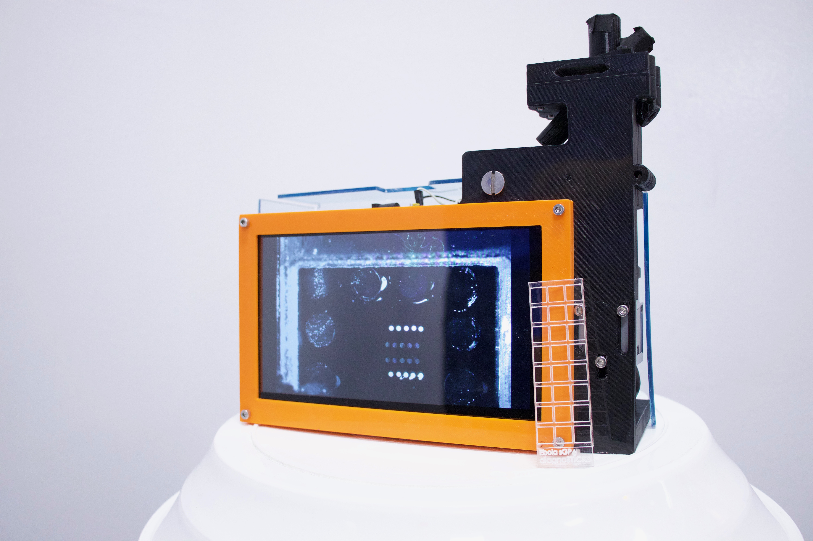

Going Deeper: Depth Image Classification via simulated SPAD array images
Jason Liu, Cassio Fontes, Jacob Heggestad, David Kinnamon, Angus Hucknall, Roarke Horstmeyer, and Ashutosh Chilkoti
jl532@duke.edu
Project Abstract PDF

Text here about the detector
Source Dataset:
Source RGB-D Dataset
.
BMES 2019 Abstract submission:
Project Abstract PDF
Code, 3D STL files, and more:
All Detector Software is linked in this Github Repo:
https://github.com/jl532/Detector-Software/
STL Files downloadable here:
solidworks parts.rar